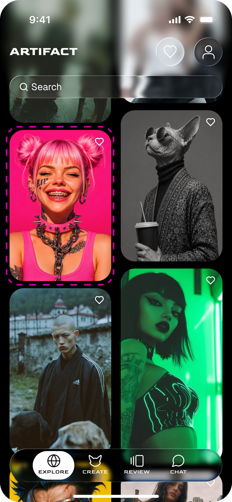
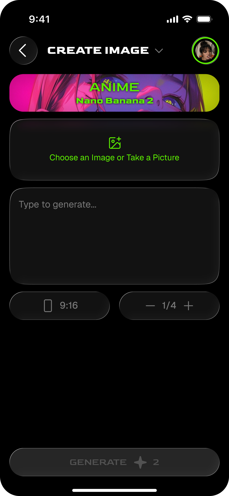
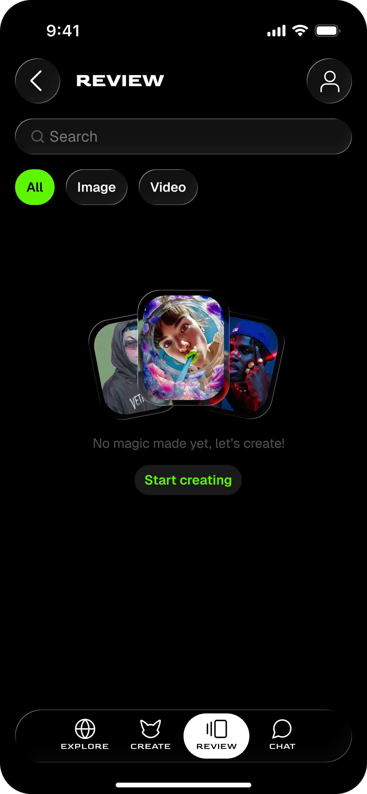
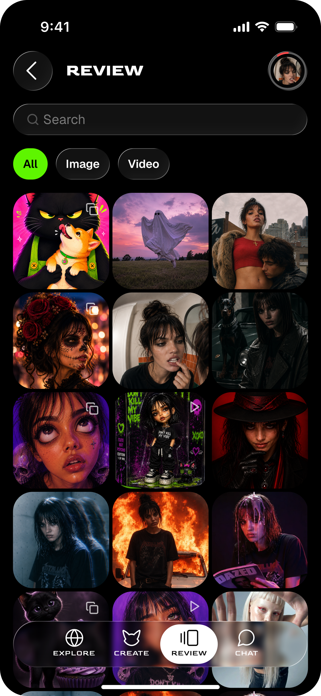
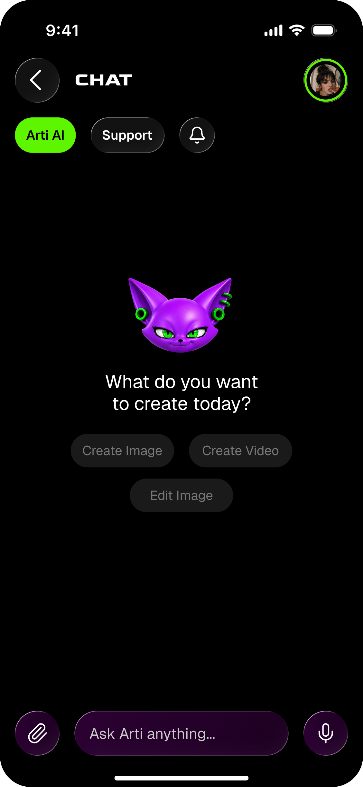
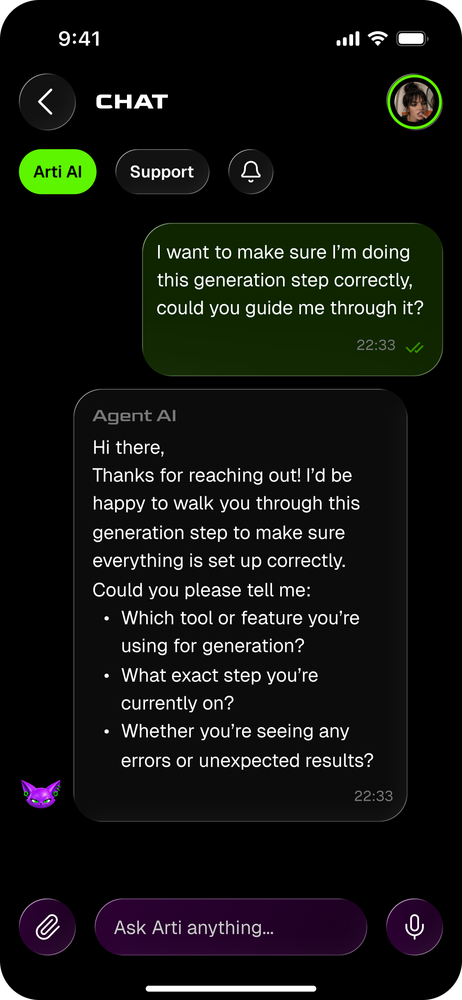
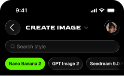
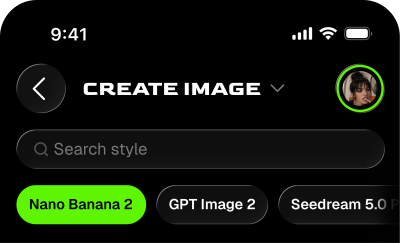

01 / Процесс
Пайплайн
из 4-5 сервисов
ARTIFACT
ТРАБЛ
AI-платформы
умеют почти всё,
но на мобилке — нет
ПРОВЕРКА
Креаторы и SMM-специалисты
ИНСАЙТЫ
01 / Процесс
Пайплайн
из 4-5 сервисов
02 / Контекст
Идеи для креатива появляютсяИдеи появляются
в дороге между делами
03 / Результат
Реф, промт, генерация и правка не связаны в одном сценарииТулзы не связаны
в одном сервисе
Нужен короткий путь от идеи к результату
АРХИТЕКТУРА
EXPLORE

CARD DETAILS
CREATE
GENERATION SETUP

REVIEW

SAVED WORKS

CHAT

AI RESPONSE

ТЕСТИРОВАНИЕ
ЗАДАНИЕ
“Надо сгенерить картинку и превратить её в видос”
TEST 01
ДОЛЯ УЧАСТНИКОВ, УСПЕШНО ЗАВЕРШИВШИХ СЦЕНАРИЙУСПЕШНО ПРОШЛИ
ПОСЛЕ ПЕРВОЙ ИТЕРАЦИИ


TEST 02
ДОЛЯ УЧАСТНИКОВ, УСПЕШНО ЗАВЕРШИВШИХ СЦЕНАРИЙУСПЕШНО ПРОШЛИ
РАЗВИТИЕ